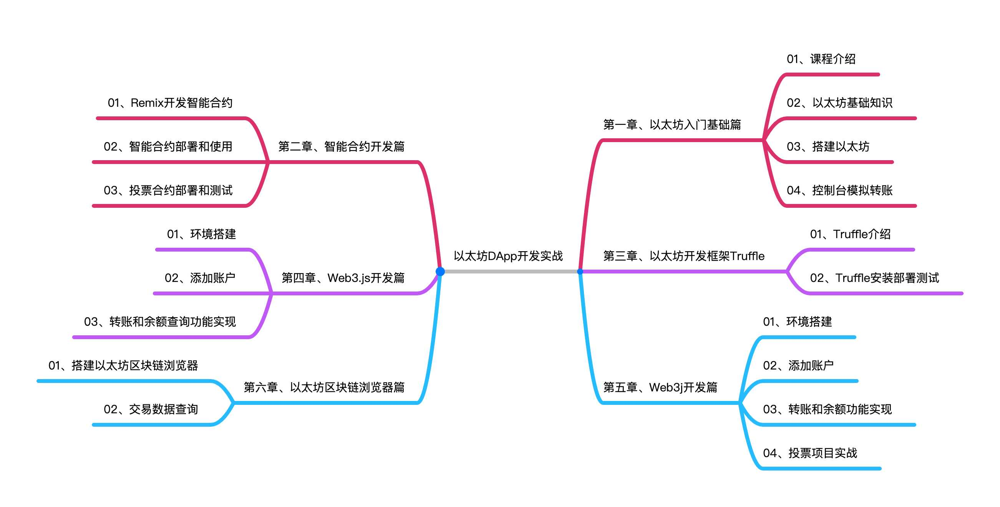

2. Hyperledger Fabric网络配置及启动¶
2.0版本的Fabric，则迎来了以下这些改进：
新的链码（chaincode）生命周期管理：重新设计的链码生命周期管理过程引入了智能合约的去中心化治理，在与账本进行交互之前，新的Fabric链码生命周期允许多个组织在链码参数（如链码认可策略）上达成一致；
用于协作和共识的新链码应用模式；
在需知悉基础上的数据隐私：组织现在可选择与其直接网络的特定成员私下共享数据；
新的外部链码启动程序：该功能允许操作者使用自己选择的技术来构建和启动链码；
新的Raft共识；
性能改进：包括任务的并行化和更高效的程序流，允许网络每秒支持数千笔交易；
本课程主要围绕以太坊的基础，分了六章如图所示：
